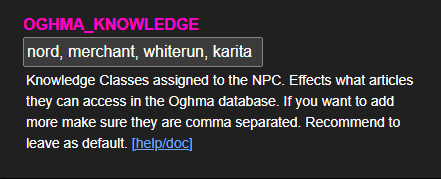
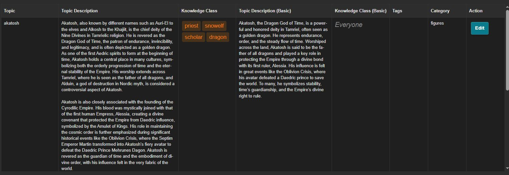
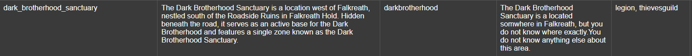
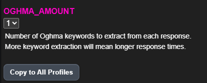
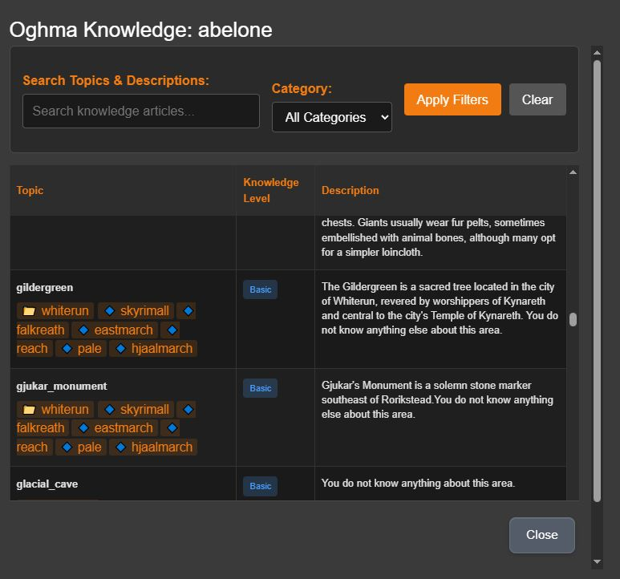
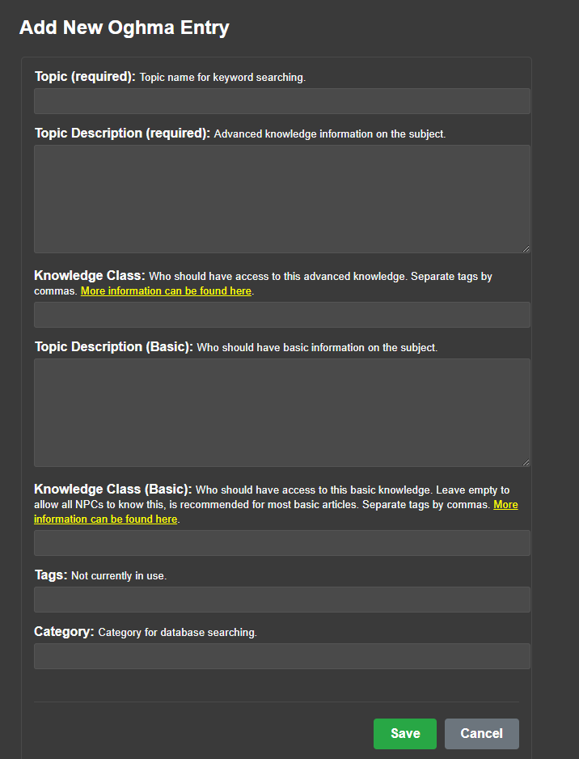
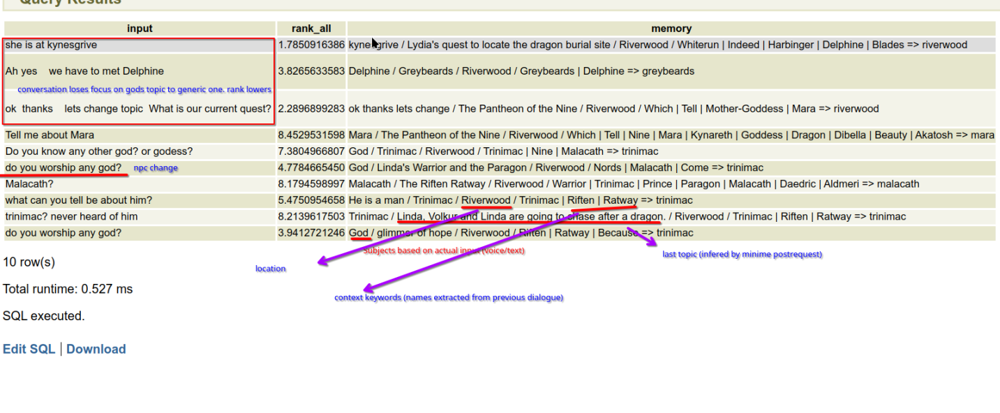

CHIM Roleplay Settings
These are the CHIM pages that shape the world beyond normal NPC dialogue. They control NPC records, quests, background activity, lore knowledge, screenshots, diaries, memories, and relationships.
CHIM NPCs Menu
What this page does: The CHIM NPCs menu is the main control page for individual AI characters. This is where you review and adjust how CHIM treats a specific NPC across the playthrough.
- Per-NPC basics: Each NPC entry includes things like name, race, gender, voice, RefID, profile, and portrait so you can confirm the character sheet is correct.
- Profile control: You can move an NPC onto a different CHIM profile, lock that profile so it stays fixed, or leave it more flexible.
- Prompt Head Override: A small copy control imports the currently active prompt head into the NPC override field, giving you a complete starting point before you make character-specific edits.
- Roleplay features: This page ties into dynamic profiles, middle-term memory, individual memory use, auto greetings, auto diaries, and background-life behavior.
- In-game editing: Open CHIM NPCs from the Prisma CHIM menu to browse nearby or discovered NPCs and edit the same main profile sections without leaving Skyrim.
- Search and filtering: You can filter by text, profile, favorites, locked NPCs, dynamic profile state, memory state, greeting behavior, and other useful NPC flags.
- Import and cleanup: The page also supports JSON import and export, bulk profile switching, relationship rebuilding, and cleanup for unlocked NPCs.
Inventory And World Awareness
What this does: CHIM records richer item and equipment data so NPCs can reason about what the player and nearby characters are carrying, wearing, collecting, or physically presenting.
- Equipment: Standard and modded equipment slots are grouped into readable worn-equipment context instead of silently dropping non-vanilla slots.
- Inventory: Item names, descriptions, keywords, quantities, and BaseIDs can be included in prompt context according to your context-detail settings.
- Concrete references: Held and picked-up objects include a RefID when Skyrim exposes one, while stacked inventory and container entries use their shared BaseID.
- VR held items: With HIGGS, CHIM can tell NPCs what the player is actively holding in either hand and keep that state separate from ordinary inventory.
- Pickup noise control: The global minimum-value setting decides which collected items are important enough to create an event for the AI.
Vanilla Quest Dialogue
What this does: Supported vanilla quests can be started and advanced through ordinary AI conversation with the quest NPC. CHIM recognizes reviewed quest phrases and safely hands the result to Skyrim's native quest system.
- Natural starts: Ask the relevant NPC about the subject, person, place, or work connected to a supported quest instead of selecting a traditional dialogue topic.
- Quest progression: CHIM can perform reviewed stage, objective, item, and handoff steps while Skyrim remains the authority for the actual quest state.
- Safety controls: The web settings can enable quest progression globally and restrict advancement to player conversations.
- Current scope: This is a beta system for reviewed vanilla quests. It is not a general solution for modded or randomly generated radiant quests.
- Separate system: Vanilla Quest Dialogue advances Skyrim quests. AI Quest Manager below creates CHIM-driven storylines and objectives.
AI Quest Manager
What this page does: AI Quest Manager is the page for generating, staging, starting, and stopping AI-driven questlines.
- Scenario setup: You can give the system a player suggestion and extra AI instructions before it generates a quest idea.
- Quest flow: The page supports generating a scenario, staging the storyline, starting the quest, requesting an end, and clearing stored quest state.
- Live tracking: It shows staged storylines, running quests, current pending steps, next objectives, and the NPCs involved.
- Reference tabs: The quest hub also links to item types, NPC templates, outfits, and quest-system server logs.
- Important setup note: The page expects you to use Send All Locations in the CHIM MCM first so the quest system has valid travel locations to work with.
Background Life
What this page does: Background Life is CHIM's world-simulation map page. It is where you watch off-screen NPC activity and nudge the wider world forward.
- Web and in-game dashboards: The Background Life page is available from the Roleplay web section and the Prisma CHIM menu.
- World map and NPC list: Select a tracked NPC to see where they are, what they are doing, and their recent events, letters, and inner thoughts.
- Actions and rules: Turn actions, letters, and tracking on or off for each NPC, trigger a new action, or ask them to send a letter.
- Create NPCs: Create a new Background Life character from a race, role, and known location while the game is running and unpaused.
- Rumors: Create and manage rumors with a hold, type, content, and lifespan so off-screen stories can spread through the world.
- History: Review travel, work, rest, trade, conversations, and other recorded activity in one event-style log.
- Trigger timing: Background Life Trigger Time is configured in hours under Global Settings. The default is 24 hours.
Oghma Infinium
What this page does: Oghma Infinium is CHIM's lore knowledge system. It helps NPCs know the right things for who they are, instead of every character sounding equally informed about every topic.
- What it changes in play: A blacksmith can sound more natural about weapons, an alchemist can know ingredient effects, and locals can know nearby places better than outsiders.
- How it shows up: Oghma can affect direct conversations and NPC-to-NPC chatter, so it shapes ordinary roleplay instead of only special lore questions.
- Main idea: Oghma helps NPCs know what they should know and, just as importantly, what they should not know.

Knowledge Classes And Access
NPCs are given knowledge classes based on things like race, profession, location, factions, and sometimes their specific identity. Oghma checks those classes before deciding what information the NPC is allowed to use.
- Advanced article: The deeper expert version of a topic for characters who should know specialist detail.
- Basic article: The simpler version for ordinary informed people.
- Open common knowledge: If the basic access tags are empty, the basic version is treated as common knowledge.
- No matching access: If an NPC matches neither level, they should not suddenly sound informed on that subject.

This is why one NPC can sound scholarly about a topic while another can only give a vague answer, or no answer at all.
How It Feels In Play
The best way to understand Oghma is by how it changes ordinary answers:
- Regional knowledge: Someone from Riften may know Northwind Summit well, while people from farther away may know little or nothing.
- Profession knowledge: A blacksmith, fisherman, or alchemist can sound more natural on their own subject area.
- Character limits: If an NPC does not have the right tags for a subject like the Dark Brotherhood Sanctuary, they should not magically sound like an expert.


The design goal is that this knowledge appears naturally during conversation. You should not have to constantly ask "what do you know about X" for Oghma to matter.
Managing Oghma Topics
HerikaServer includes an Oghma browser and editor so you can inspect topics and expand the knowledge base for your own mod list and canon.
- Browse topics: You can search by topic or category and inspect what is already covered.
- Edit topics: Each entry can include advanced text, basic text, access classes, tags, and category information.
- Support your own canon: You are not limited to vanilla Skyrim. You can add custom topics that fit your load order and roleplay setup.
- Useful references: The old guide also linked shared sheets for knowledge classes and broader Oghma topic coverage.


Useful references: Oghma Knowledge Classes, Project Oghma, How we made AI NPCs smarter, How we made AI NPCs dumber on purpose.
Topic Picking And Dynamic Oghma
Oghma does not just fire on one hard-coded keyword. It tries to choose the most relevant topic from the current conversation and surrounding context.

- Normal Oghma: Pulls in the most relevant lore article for the current moment.
- Dynamic Oghma: Lets knowledge change when quests progress, so world knowledge can evolve with your save.
- Why it matters: This stops the lore layer from feeling frozen when your playthrough changes the world.
Dynamic Oghma is what makes this system useful for changing quest states, faction shifts, and custom world progression instead of only static encyclopedia entries.
Soulgaze Gallery
What this page does: Soulgaze Gallery is the image archive for CHIM screenshots and scene captures.
- Gallery browser: Images and videos are shown in one place, newest first, so you can quickly review captured moments.
- Basic management: You can upload JPG or PNG files, open them, download them, and delete them from the gallery UI.
- In-game capture flow: This page expects you to use the Soulgaze hotkey in game so those captures appear here automatically.
- Persistent scene descriptions: Soulgaze descriptions can be reused as visual context when you return to a place.
- Lock as Location Description: Lock the best capture for a location when you want CHIM to keep using that description.
- Extra image tools: The lightbox also includes optional reimagine and animation actions for players who want alternate versions of a captured scene.
Diaries
What this page does: Diaries is the main browser and editor for CHIM diary entries. It is where you read the written inner record CHIM creates for characters.
- Browsing: Entries can be explored by person, by date, or as a larger full-history view.
- Reading modes: You can open a character's diary in a book-style reading view as well as the normal list view.
- Physical diaries: A profile can create one readable diary book in an NPC's inventory and keep it updated as new entries are written.
- Latest entry context: Profiles can include an NPC's newest diary entry in future conversations.
- Export: The page supports downloading the current diary view or exporting all diary entries.
- Editing and cleanup: Individual entries can be edited or deleted, and there is also a full wipe option for the whole diary log.
- Player controls: Player Roleplay has independent Auto Diary and Auto Diary Wait switches, so player diary generation can differ from NPC profile behavior.
Memories
What this page does: Memories are managed through the memory tab inside Events & Memories. This is the long-term continuity layer that stops CHIM from treating every conversation like a fresh start.
- Memory summaries: The page shows saved summaries with scope, participants, time coverage, and the actual summary text CHIM is carrying forward.
- System status: It also shows whether the memory system is enabled and whether embeddings and TXT2VEC are available.
- Maintenance tools: You can sync summaries manually, edit a summary, delete one summary, or wipe all saved summaries.
- Roleplay effect: These summaries are what help CHIM keep continuity across long sessions, scene changes, and stretched playthroughs.
Relationship System
What this page does: The Relationship System tracks how characters feel about people, groups, and important ideas over time.
- What it tracks: Emotional and social state like trust, warmth, resentment, fear, attachment, loyalty, or hostility.
- Who it applies to: It is not only for the player. NPCs can build opinions about other NPCs, factions, causes, and recurring topics too.
- How it changes: Conversations, praise, betrayal, repeated behavior, conflict, and major events can all improve or damage a relationship.
- What it changes in play: The same NPC can answer very differently depending on who they are speaking to and how that relationship has developed so far.
- Separate from Oghma: This system is about feelings and social history, not whether someone knows a fact.